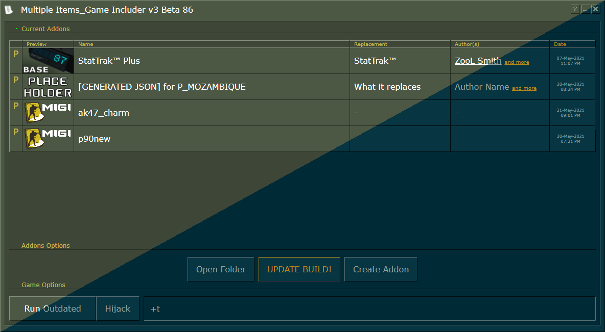
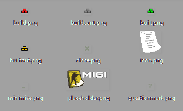

Themes
The tool allows you to replace its colors and images. All custom theme files are located at Counter-Strike Global Offensive/migi/theme/
Those files are generated on launch if missing.
There's no distribution method for themes, and only require you to overwrite those files.
The custom theme will only load when MIGI starts, any edit will require a restart.
Colors
colors.json has all the available CSS classes that you can modify,
use standard CSS colors in the value fields, either a defined color name or hexadecimal values.
Default settings:
{
"text-color": "white",
"text-header": "#c4b550",
"text-select": "#96892d",
"text-strikethrough": "#a0aa95",
"text-placeholder": "#a0aa95",
"text-disabled": "#282e22",
"text-disabled-shadow": "#889180",
"border-lite": "#889180",
"border-dark": "#282e22",
"border-focus-lite": "#f3de54",
"border-focus-dark": "#857713",
"background-lite": "#4c5844",
"background-dark": "#3e4637"
}
Example of what can be achieved with it (original on the left, modified on the right):

Images
Images inside img/ can also be replaced to your needs.
